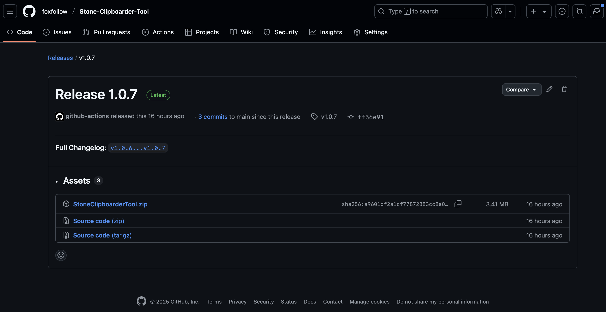
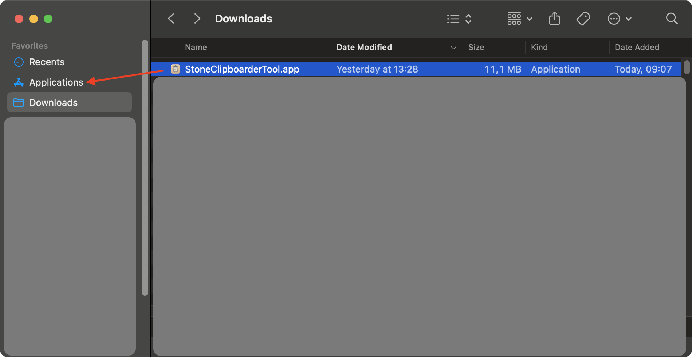
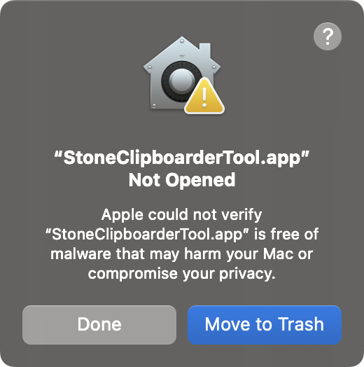
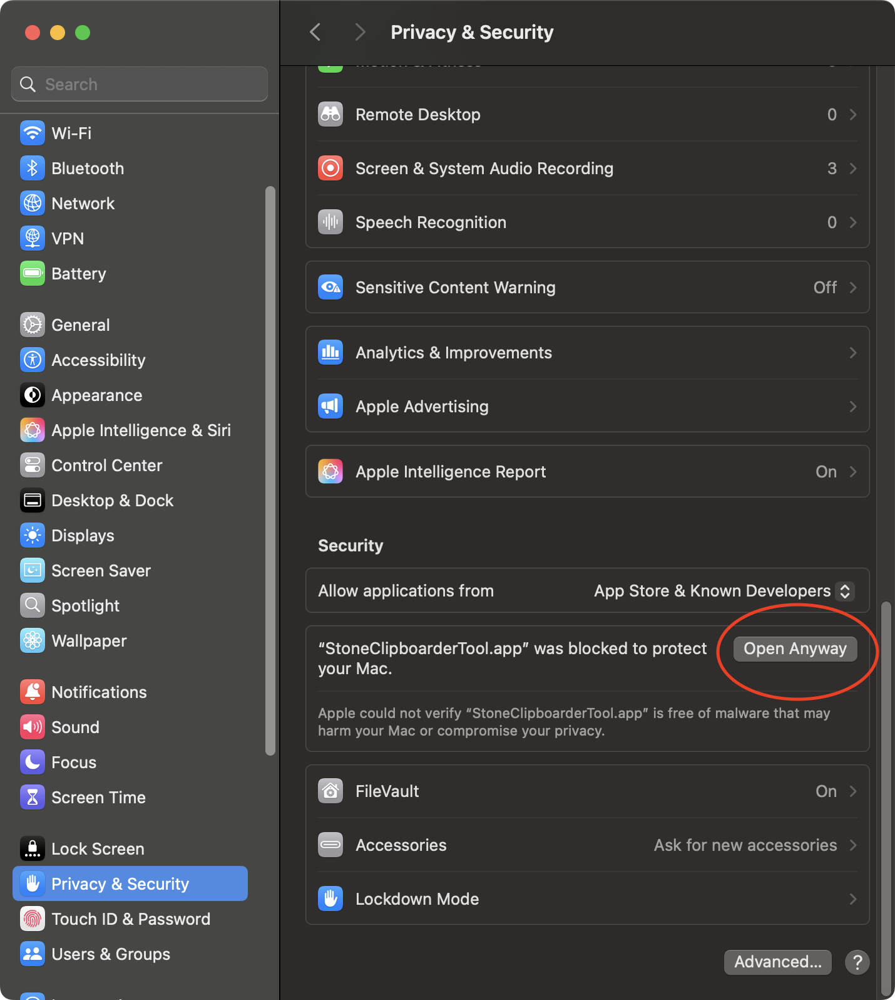
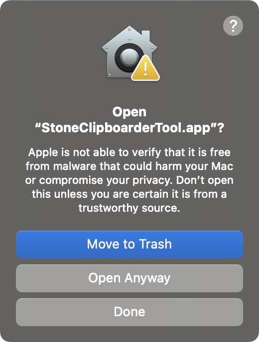

Installation Guide
How to install Stone Clipboarder Tool on macOS
Important Notice
This app is not signed with an Apple Developer certificate. Due to the lack of an Apple Developer subscription, you'll need to manually allow the app to run. This is completely safe — the app is open source and you can review the code on GitHub.
Recommended: Install via Homebrew
EasiestThe easiest way to install and avoid most security warnings is using Homebrew.
brew tap foxfollow/stonebrew install stone-clipboarder-tool
This automatically configures the app to run without the usual security quarantine.
Manual Installation Method
Download the App
First, download the latest version of Stone Clipboarder Tool from GitHub releases.
Download Latest Release
Note: Look for the latest release and download
the .dmg file or
.zip archive containing the app.
Move to Applications
After downloading, extract the app (if it's in a zip file) and drag it to your Applications folder. You can also double-click the .dmg file and drag the app to Applications.

Tip: You can also install the app in any other location, but Applications folder is recommended for easy access.
First Launch Attempt
Try to open the app by double-clicking it. macOS will show a security warning because the app is not from an identified developer.

Expected behavior: macOS will prevent the app from opening and show a security dialog. This is normal — click "DONE" and proceed to the next step.
Open System Settings
Go to System Settings → Privacy & Security. Scroll down to find the Security section where you'll see a message about the blocked app.

Alternative: You can also click on "?" in the previous step, then click on "Open Privacy & Security settings for me" from macOS Tips app.
Allow the App
In the Privacy & Security settings, click "Open Anyway" next to the Stone Clipboarder Tool entry. Confirm your choice when prompted.

Success: After clicking "Open Anyway", the app will launch and you'll be able to use it normally. You only need to do this once.
Grant Permissions
When the app first runs, it may request permissions to:
- Accessibility: To monitor clipboard changes
- Screen Recording: To capture clipboard content (if needed)
Grant these permissions in System Settings → Privacy & Security to ensure the app works properly.
Privacy: Stone Clipboarder Tool only accesses your clipboard to save and manage copied content locally. No data is sent to external servers.
Security & Privacy
Stone Clipboarder Tool is completely safe to use:
- The app is open source — you can review the code on GitHub
- All clipboard data is stored locally using SwiftData
- No network connections are made
- No personal data is collected or transmitted
The only reason for the security warning is the lack of an Apple Developer certificate, which costs $99/year.